圖文操作指引
憑證辨識系統使用者手冊
依序完成檔案匯入、逐頁外觀確認、內容辨識及人工核對。完成確認後，可在「已確認單據」查詢唯讀內容或列印單筆單據。
- 01匯入檔案
- 02外觀確認
- 03掃描與辨識
- 04核對與確認
首頁與工作區
登入後由作業首頁進入匯入、外觀確認、掃描清單與確認等工作區。依畫面導覽完成四個處理步驟；已確認資料另由「已確認單據」頁面查詢。
在作業首頁或「已確認單據」頁面，按「使用者手冊」會另開分頁，保留原作業畫面。線上手冊上方提供「下載 PDF」、「列印本手冊」及「返回作業頁」；點選圖片可放大檢視。
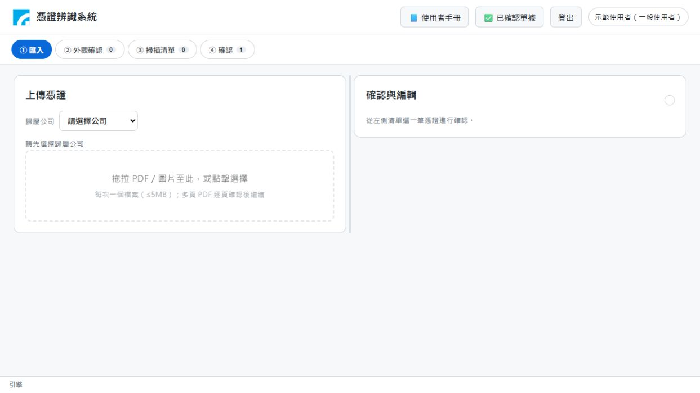
匯入檔案
每次匯入一個檔案，並先選定憑證所屬公司。
- 開啟「匯入」，選擇本次憑證的歸屬公司。
- 拖曳 PDF 或圖片至上傳區，或點選上傳區選取檔案；一次處理一個檔案。
- 等待系統準備頁面預覽，依提示繼續進行外觀確認。
多頁 PDF 會逐頁準備預覽。確認目前頁面外觀後，再依序處理下一頁，直到所有頁面完成。
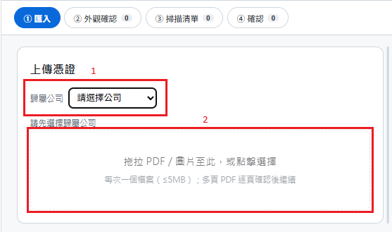
逐頁確認外觀
在內容辨識前，先將每頁影像調整到方向正確、文字清楚且重要資訊完整。
- 檢查單據類型、公司及影像內容。
- 使用旋轉功能調整方向；需要時以角度控制微調影像。
- 使用裁切移除多餘邊界，確認裁切結果；調整不合適時使用復原。
- 檢查日期、號碼、統編、金額及重要註記均在影像範圍內，再按「確認外觀」加入掃描清單。
- 多頁檔案逐頁重複檢查與確認。
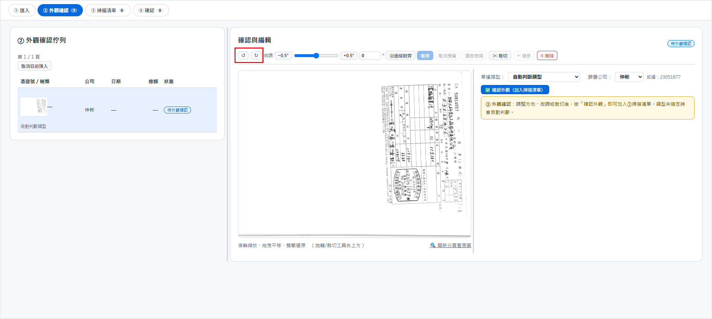
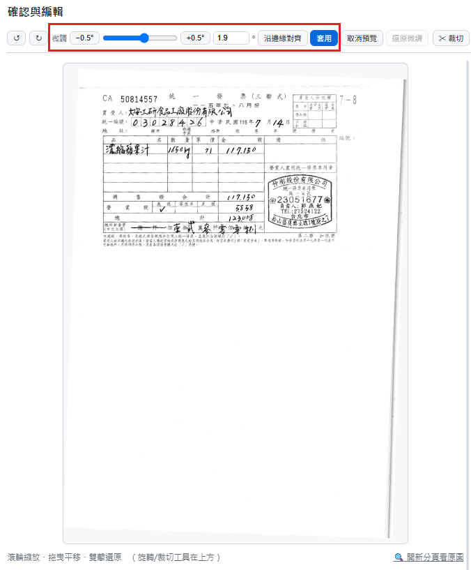
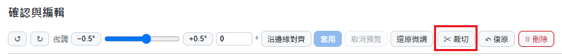
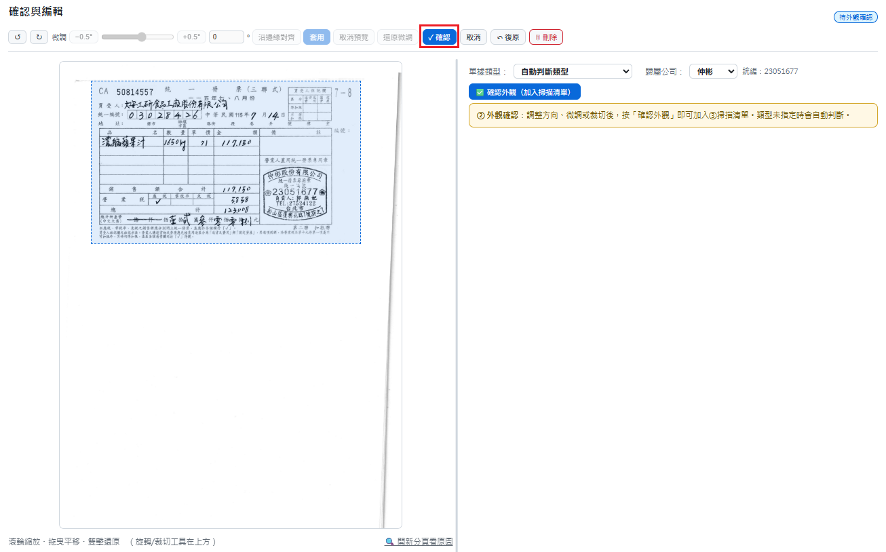
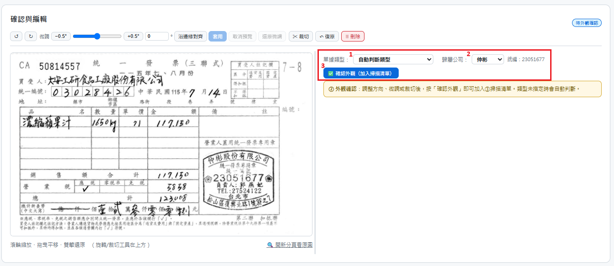
掃描清單與內容辨識
掃描清單列出已確認外觀、等待辨識的單據。可逐張辨識，也可一次提取清單內的待提取單據。
- 開啟掃描清單，檢查要處理的單據。
- 只辨識一張時，按該筆的「辨識此張」；處理清單內全部待提取單據時，按「一鍵提取全部」。
- 單張辨識成功後，系統自動切換至「④ 確認」並開啟該張仍待確認的單據。
- 批次辨識有成功結果時，系統自動切換至「④ 確認」，依本批結果順序開啟第一張成功且仍待確認的單據。
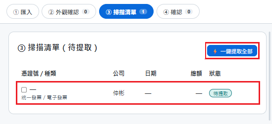
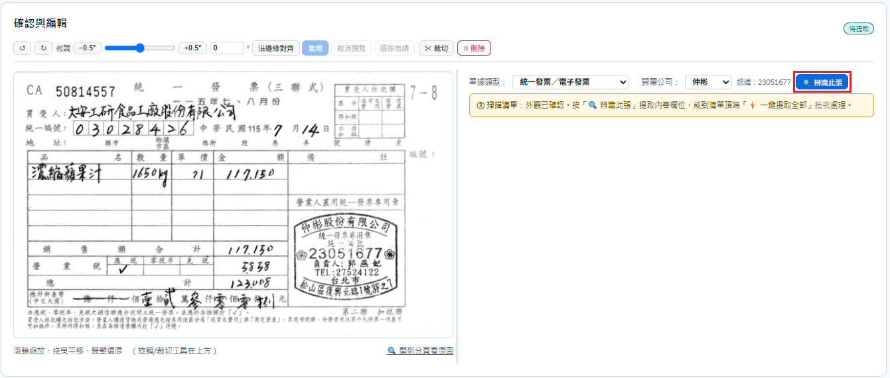
辨識完成時的處理
- 批次中有部分辨識失敗時，失敗提示會保留；有成功結果才會依批次順序開啟第一張成功且仍待確認的單據。全部失敗時不自動切換。
- 辨識進行中若您切換其他步驟、選取別張單據，或有未儲存修改，系統保留目前操作並顯示完成提示；您可以自行前往「④ 確認」。
- 自動切換只會開啟待核對資料，不代表人工核對或確認已完成。
完成判斷
辨識成功的單據列於「④ 確認」待確認清單，仍須由使用者逐張核對並確認。
核對欄位並確認
「④ 確認」只列出待確認單據。請對照原始影像，核對欄位及明細，再儲存草稿或確認。
- 檢查日期、號碼、公司、買賣方資訊、統編、金額及其他辨識欄位。
- 按需要修正欄位及明細內容，包括明細科目。修正後再次確認內容正確。
- 尚未完成核對時按「儲存草稿」保存修改；核對完成後按「確認」完成確認。
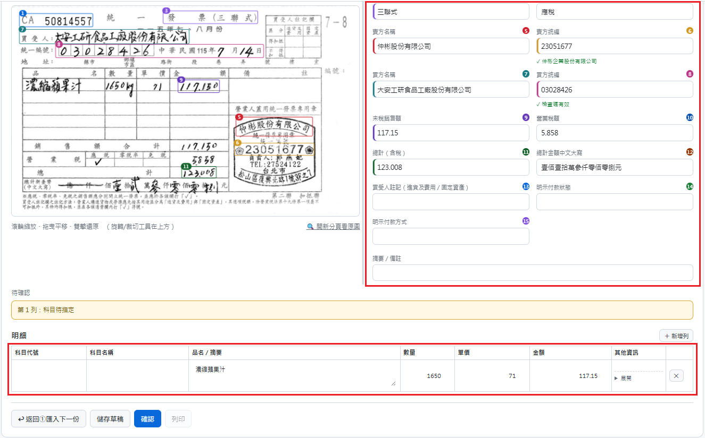
記住品名對應
科目代號與科目名稱可直接填寫。勾選「記住品名對應」並儲存後，同一公司相同品名可沿用本次科目；取消勾選時，只保留本張單據的科目設定。
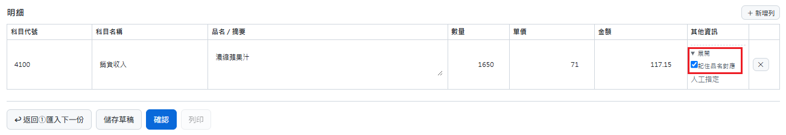
確認成功後
確認成功後，單據會移出待確認清單並收起編輯區；畫面顯示成功提示及前往「已確認單據」的連結。已確認單據請至獨立頁面檢視或列印。
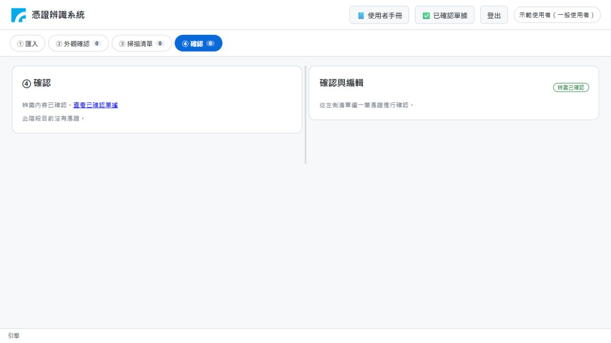
已確認單據：查詢、檢視與列印
一般登入使用者可在「已確認單據」頁面依公司與單據日期查詢，開啟唯讀明細及列印單筆單據。
查詢單據
- 開啟「已確認單據」。預設查詢全部公司、所有日期，並顯示 50 筆。
- 可選擇公司，並輸入單據日期起日、迄日或按日期選擇鈕開啟日曆。日期可用「年／月／日」輸入；日曆選取日期會顯示為「2026年10月30日」。
- 日期條件包含起訖日當天，只輸入起日或迄日也可查詢。按「查詢」套用條件，按「清除條件」回到全部公司、所有日期的預設查詢。
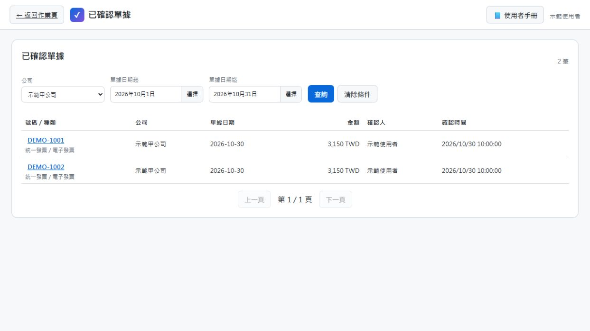
結果依單據日期由新到舊排列，沒有有效日期的單據排在最後；設定日期條件時，沒有有效日期的單據不列入結果。頁面顯示符合條件的總筆數，可使用上一頁、下一頁瀏覽。
檢視唯讀明細
點選單據可開啟唯讀明細，查看原始影像及附頁、辨識欄位與明細內容。此頁提供檢視及單筆列印，不提供編輯、匯出或批次列印。
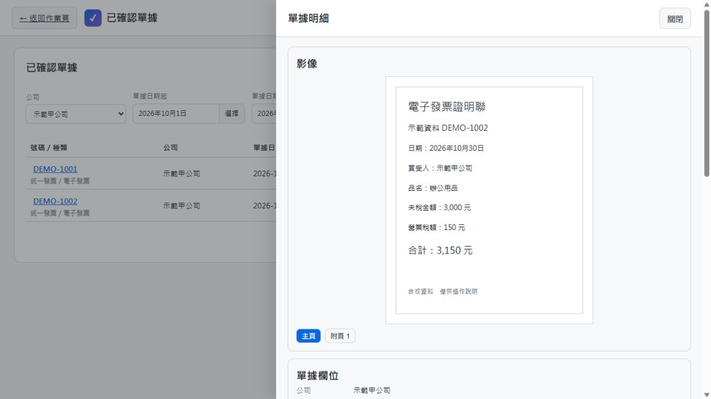
向下捲動明細面板，可查看欄位、品名與科目明細，並找到「列印辨識報告」按鈕。
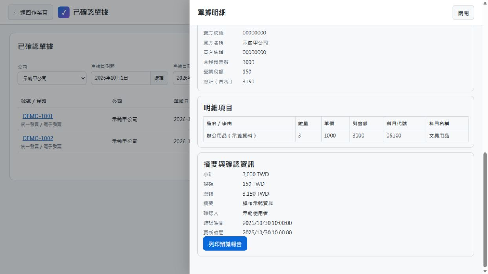
單筆列印與版本檢查
開啟單據後可列印該筆資料。列印前系統會檢查已確認版本；若版本不符，頁面提示重新確認並停用列印。請依提示重新載入及處理；仍無法處理時，請聯絡管理員協助。
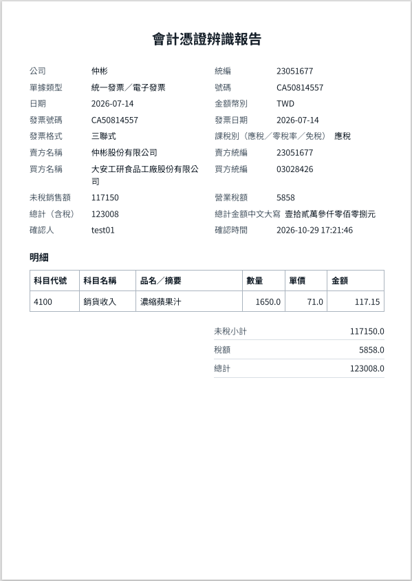